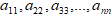
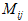

1.Определители и их свойства. Вычисление определителей.
Первые упоминания об определителях относятся к концу 17-го века, когда немецкий математик Лейбниц изучал линейные уравнения с многими неизвестными. Далее в конце 18-го века швейцарский математик Крамер указал общий закон составления определителей и привел формулы для решения систем линейных уравнений с n неизвестными с помощью определителей.В настоящее время нет почти ни одной отрасли математики, в которой не имели бы приложений определители. Они встречаются в линейной и векторной алгебре, аналитической геометрии, механике, теории функций переменных, линейном программирования и т.д.
Определение 1. Определителем n-го порядка - называется число , представляющее собой квадратную таблицу, состоящую из n строк и n столбцов
 - элементы определителя, где
- элементы определителя, где i – номер строки,
j –номер столбца, n - порядок определителя.
Определение 2. Главной диагональю определителя называется совокупность элементов  , состоящая из элементов с одинаковыми индексами.
Определение 3.
Минором  элемента определителя n- го порядка называется определитель (n-1)-го порядка, полученный из данного определителя путем вычеркивания i-ой строки и j-го столбца.
Определение 4. Алгебраическим дополнением  элемента называется его минор, взятый со знаком «+», если сумма индексов четная и со знаком «-», если сумма индексов нечетная, т.е.
элемента называется его минор, взятый со знаком «+», если сумма индексов четная и со знаком «-», если сумма индексов нечетная, т.е.
Определение 5. Определителем первого порядка называется определитель, состоящий из одного элемента:
Определение 6. Определителем 2-го порядка называется число, которое вычисляется по формуле:
Определение 7. Определителем третьего порядка называется число, которое вычисляется по формуле:
Для запоминания формулы используется правило Сарриуса (правило «треугольника »):